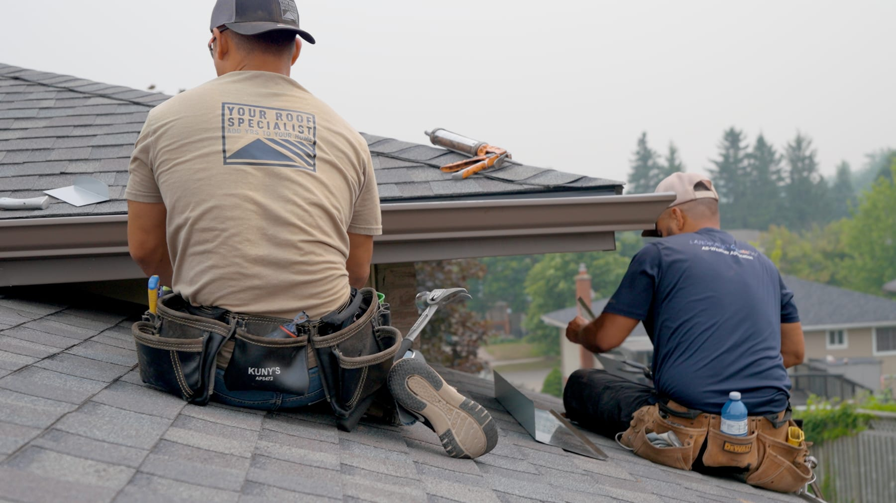

Every spring 2027 roof replacement signed and approved by December 1st includes a free material upgrade, automatically — no color pick required yet.
Request your free quote below and mention Spring 2027 in "Anything else we should know?"
Sign and approve your estimate by Dec 1 — your free material upgrade locks in automatically.
Want the price locked too? Ask about our optional Material Hold Deposit — a percentage of your estimate, not your full install deposit.
Full roof replacements installed to manufacturer specification by certified crews — plus expert repairs, accurate leak diagnosis, and same-day emergency response across the region.
Master Craftsman Roofing Contractor · ShingleMaster Pro
CertainTeed Landmark architectural shingles as standard
Down to the deck — the only method that qualifies for extended warranty coverage
Tell us about your property and we'll follow up as quickly as possible.
Replacements can also be spread over fixed monthly payments — checking your options doesn't commit you to the work.
Many roofing issues aren't caused by age alone. They're caused by improper installation, overlooked details, or repairs that never addressed the root cause. We identify active leaks, flashing issues, ventilation problems, and winter-related damage like ice dams — then fix it right the first time.
On replacements we tear off to the deck every time. It costs more than laying new shingles over the old ones, but it's the only way to see the condition of the wood your roof is actually fastened to — and it's the only method that qualifies for CertainTeed's extended warranty coverage. We'd rather quote honestly than win on a number that hides what's underneath.
Your Roof Specialist has been repairing and replacing roofs across Kitchener-Waterloo since 2012, with 384 Google reviews at 4.9 from local homeowners behind that work.

"We give you a real answer, a real timeline, and a crew that actually shows up when we say we will."
Every service is backed by clear photo documentation and a straight answer on cost before we start.
Full tear-off and complete system replacement using premium CertainTeed Landmark shingles — residential or commercial, backed by a leak-free guarantee.
Precise leak diagnosis and targeted repairs — no unnecessary work, no inflated invoices.
Specialized diagnosis and servicing for flat and low-slope roofing systems.
Same-day response time for unexpected leaks. Call or text and we'll prioritize you.
Heat trace cable installation to protect your roof from aggressive ice dam build-up.
What they cost to run →Safe, professional ice dam removal to prevent water backup and interior damage.
Winter Prep →Master Craftsman Roofing Contractor and ShingleMaster Pro credentials — the qualifications manufacturer warranty coverage depends on.
CertainTeed Landmark architectural shingles as standard, not builder-grade three-tab that fails early.
Decking, ice-and-water protection, underlayment, all new flashing, and balanced ventilation — not just the shingles you can see.
We find the real source of a leak, not just the nearest symptom — and we'll tell you when a repair is all you need.
Photo documentation of what we find and what we fix, including everything uncovered once the deck is exposed.
Fully licensed and insured for residential and commercial work, with a safety-first process on every job.
When a neighbourhood was built decides when its roofs come due. These pages cover what we actually know about each area's housing stock, local conditions, and access.
Real jobs, real homes across Kitchener-Waterloo.
Every job is handled by trained local roofers who treat your home like their own.
Ice dams, heat loss, and surprise leaks are avoidable. Our Winter Prep Program keeps your roofing costs to a minimum with a clear, no-obligation plan.
If heat cables are part of what you are asking about, please read and confirm these three things first.
Winter increases generally land between $60 and $150 a month.
Still far less than putting right one water-damaged ceiling.
Confirm all three to continue
Not sure heat cables are the right answer for your roof? Read how they compare with insulation and ventilation — that route has no monthly cost.
Heat cables work, and in the right situation they are the cheapest way to stop an ice-dam leak this winter. We would still rather you knew the running cost now than found it on a January bill.
Self-regulating cable keeps a melt channel open at the eaves and gutters so water has somewhere to go instead of backing up behind an ice dam. It does not stop ice forming, and it does not fix the heat loss causing it — that is attic insulation and ventilation.
An ice-dam leak does not stop at the roof. It comes through the insulation, the ceiling and the drywall, and it usually takes the paint, the trim and whatever is underneath with it on the way down. Then there is the deductible, and the weeks of living around the repair.
A full winter of running heat cables costs less than putting one of those right. That is the trade you are making, and it is the reason we install them.
A controller is the single biggest saving here. Cables left switched on from November to March cost far more than cables that come on when they are actually needed.
We install 160 feet of cable as a minimum. That is the length that gives real coverage across the eaves, valleys and downspouts, and we do not quote below it — a partial run is money spent on a problem you still have.
Your quote covers supply, installation and workmanship on the cable system. It does not cover the electricity to run it, new circuits where a licensed electrician is needed, or attic insulation and ventilation work. Those are separate.
These figures are a planning estimate, not a quote on your power bill. We have no visibility of your hydro account and no control over electricity rates or the weather, so your actual cost may fall outside the range above.
Installing heat cables trades a higher winter electricity bill for a lower risk of ice-dam leaks. We will tell you honestly whether we think they suit your roof, but the choice to install them, and the ongoing cost of running them, rest with the homeowner. The same wording appears in our terms and conditions, which you accept when you approve a quote.
We'd rather you check our reviews on Google than take our word for it.
We handle small roof repairs, flat roof repairs, full residential and commercial roof replacement, emergency leak repairs, heat cable installation, and ice dam removal across Kitchener, Waterloo, Cambridge, Elmira, and Guelph.
Yes. We prioritize same-day response for active leaks and storm damage — call or text (519) 721-4969 and we'll get to you as quickly as possible.
We diagnose the actual source of the problem first — flashing issues, ventilation problems, improper installation, or ice dam damage — rather than defaulting to the most expensive fix. If a targeted repair solves it, that's what we recommend.
It's a no-obligation, pre-season plan that covers heat cable installation, minor repairs before winter hits, a roof replacement timeline estimate if needed, and honest advice on keeping costs down before ice dams and heat loss become a problem.
Most residential roof replacements in Kitchener-Waterloo fall between $9,000 and $22,000, and minor localized repairs typically run in the hundreds. Where your roof lands depends on its size, pitch, the number of layers to remove, the condition of the decking, and how many valleys, chimneys and skylights need new flashing. We measure the roof and give you a specific figure in writing after a free, no-obligation assessment.
Yes, on roof replacements. Monthly payment options are available through Financeit, a Canadian home-improvement lender — you apply directly with them, so your financial details go to the lender rather than to your roofer. Checking what you qualify for doesn't commit you to the work, and your written estimate is free whether you finance or not. Financing never changes the price or the scope of the roof.
Kitchener, Waterloo, Cambridge, Elmira, Guelph, and the surrounding areas.
Yes. Your Roof Specialist is fully licensed and insured for residential and commercial roofing work.
Serving Kitchener, Waterloo, Cambridge, Elmira, Guelph, and surrounding areas.